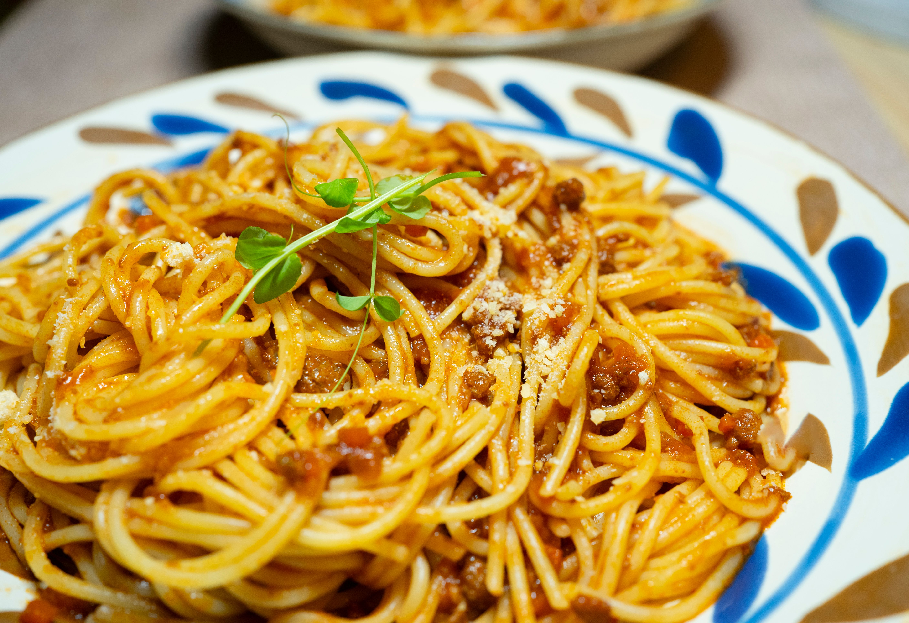

Home
Spaghetti Bolognese Recipe

Description
Spaghetti Bolognese is a popular Italian-inspired dish made with spaghetti pasta topped with a rich and savoury meat sauce. The sauce is traditionally prepared using minced beef, tomatoes, onions, and herbs.
Flavoured with garlic, oregano, basil, and black pepper, this delicious meal is perfect for lunch or dinner. It is best served hot with grated parmesan cheese and garlic bread.
Ingredients
- 400 g spaghetti
- 500 g minced beef
- 2 tbsp olive oil
- 1 medium onion, finely chopped
- 2 garlic cloves, crushed
- 1 carrot, finely diced
- 1 celery stick, finely diced
- 400 g canned chopped tomatoes
- 2 tbsp tomato paste
- 1 cup beef stock
- 1 tsp dried oregano
- 1 tsp dried basil
- 1/2 tsp black pepper
- 1 tsp salt, or to taste
- 1 tbsp fresh parsley, chopped
- Grated parmesan cheese, for serving
Steps
- Heat olive oil in a large pan over medium heat. Add the chopped onion, carrot, and celery. Cook for 5 minutes until softened. Add garlic and cook for another minute.
- Add the minced beef and cook for 6–8 minutes, breaking it apart with a spoon until browned.
- Stir in the tomato paste, chopped tomatoes, beef stock, oregano, basil, salt, and black pepper. Mix everything together.
- Reduce heat to low, cover, and simmer for 25–30 minutes, stirring occasionally until the sauce thickens.
- Meanwhile, cook spaghetti in a large pot of salted boiling water according to the packet instructions. Drain the pasta.
- Serve the Bolognese sauce over the spaghetti. Garnish with fresh parsley and grated parmesan cheese. Serve hot.